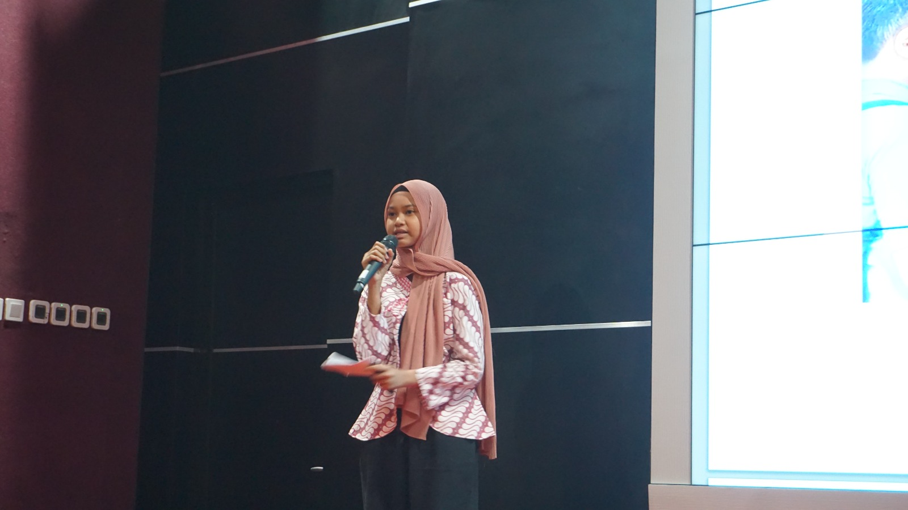
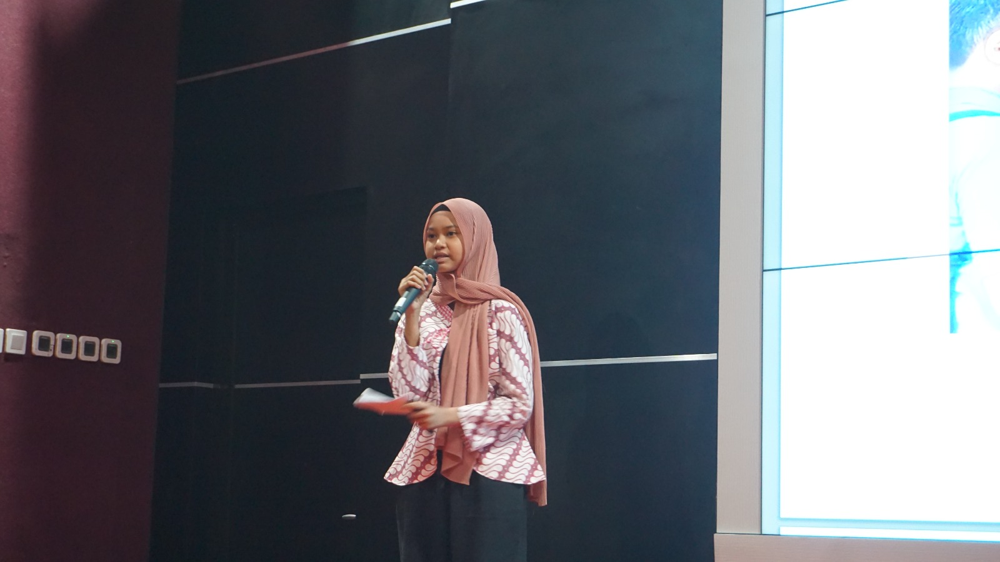

.png) 

Project Based Learning bukan sekadar metode, tetapi perjalanan pembelajaran yang hidup. Setiap proyek adalah jendela menuju pengalaman nyata, di mana ide-ide tumbuh, kreativitas bersemi, dan solusi lahir dari tangan yang bergerak. Bukan hanya menghafal teori, tetapi menyelami proses, merangkai makna, dan mencipta perubahan. -Projek Based Learning "KAMIKA" Karya lmiah Arunika -Sang Inisiator (Aksi Nyata Tim Arunika) -Pasar Karya Raya (Pasar Ide & Gagasan)
.png)
.png)
Kelana bukan sekadar perjalanan, tetapi kisah yang ditulis langkah demi langkah. Di setiap jejak, ada pelajaran yang tertinggal, di setiap persimpangan, ada makna yang menunggu ditemukan. Sebab, belajar bukan hanya duduk di ruang kelas, tetapi melangkah ke dunia yang luas, menyerap hikmah dari setiap sudut yang dijelajahi.
"Apa itu Road show, Road Show Ruang Mumpuni adalah panggung bagi bakat dan minat, di mana siswa bukan hanya belajar, tetapi juga berbagi dan menginspirasi. Dari satu sekolah ke sekolah lain, mereka menyalakan semangat, menjadikan belajar lebih fun, interaktif, dan penuh makna. Sebab, ilmu bukan sekadar dipahami, tetapi juga dirayakan dalam ruang yang memberi tempat bagi setiap potensi untuk bersinar."